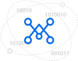
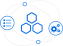

方案构成
为服务型机器人提供语音交互、语义的智能理解与交互、自然语言处理、图像识别等核心技术，支持多领域的语义解析及问答对话。满足家庭陪护、儿童、医疗、教育、政务机关、银行、酒店、餐饮、旅游景区等行业场景需求
-
让机器拥有耳朵和嘴巴
机器人可以通过语音识别听懂用户说的内容，还可以把文字内容通过语音合成说出来
-
语音识别
提供业界优质且免费的语音服务，通过场景识别优化，准确率可达到90%以上，音色分析，语速分析，彻底的让您的应用做到绘“声”绘色。
-
理解与交互技术UNIT
灵活定制自己的智能对话系统，一个普通开发者在一周内便可完成一个常见垂类（如“查天气”、“导航”等）的对话系统开发。
-
可搭载其他丰富的能力
可以脑洞大开，搭载图像识别、人脸识别等丰富能力，完善语音功能让其具有游戏能力
功能特点
通过图形化的数据采集核对工具，对历史数据进行采集、清洗和储存。同事支持检测采集数据和原系统数据对比，保证数据条目的一致性。
- 
- 
- 数据集中
- 数据标准化
- 实时服务
- 安全审计
- 运维监控
- 全量数据
数据清洗
数据适配
数据储存 - 数据元
主数据
词汇字典
数据映射 - 多量数据在线
多种接口形式
快速查询
降低业务负载 - 数据审计
数据盘点
权限认证
隐私处理 - 群集监控
故障排除
扩容拓展
应急处理
-
数据实时接入
采用集成平台技术，完成医院实时数据的转换接入
-
对外数据服务
通过丰富的对外服务方式，提供实时的信息查询，降低业务系统压力，保证数据系统生命周期的完整性和关联性
-
数据集中存储
实现可靠、高性能、可伸缩、实时读写的列式储存数据
核心优势
-

先进引擎分析
首创音色，语速分析，记录每一位交流过的人，识别出你喜爱的明星说话
-
流畅的语音会话方式
精准的识别度，提供流畅的语音，让机器人拥有更多情感
-
多领域的发展
根据使用场景的不同，可以替换其知识库和知识图谱
-
数据中心的广度和深度
覆盖全院80%以上的业务，数据审计、盘点、安全隐私处理
关于Divemath
关于我们
隐私保护政策
解决方案
语音识别解决方案
联系我们
邮箱：hr.operation@divemath.com
电话：025-52717672
传真：025-86152035
工作时间：9：00 - 18：00
地址：南京市江宁区南佑路7号千人专家创业大厦8011室
Divemath © 2017 南京联合创新科学研究所 |
苏ICP备17036492号-2